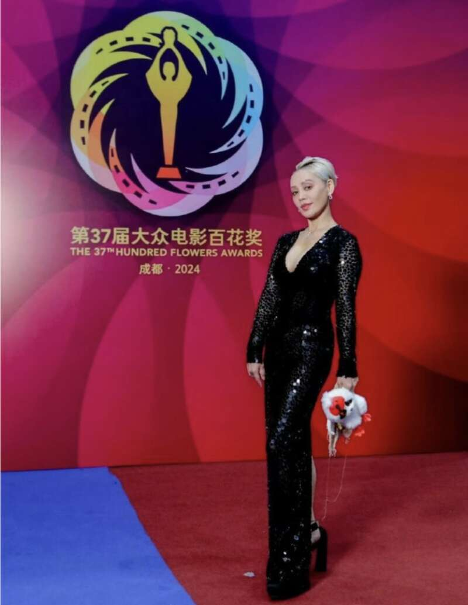

演员宁静这身材，这颜值，这自信，真是光彩夺目呀。
就在昨天，演员宁静受邀参加了百花奖颁奖典礼，成为了颁奖嘉宾。
本以为作为颁奖嘉宾的宁静没有多大的看点，毕竟已经年过半百的人了，又是圈内比较尊重的前辈，但宁静的出现不仅为百花奖锦上添花，更是让很多女明星羡慕嫉妒恨。
当天，宁静身穿一身黑色的深V包臀长裙，而且领口非常大，直接把傲人的身材给展露出来，身上那闪亮的小鳞片，就和她一样，闪闪发光，直接成为万众瞩目的焦点。

如果换做其他的女明星穿这样的衣服，早就用手护着了，但是作为大姐大的宁静，却丝毫不在意这些小细节，昂头挺胸，自信光芒，感觉这就是她的舞台，吸引无数人的目光。
面对镜头，宁静也是非常自信的打招呼，那傲人的事业线也是非常的深邃，前凸后翘的身材真是绝了，而且宁静给人一种清新脱俗的感觉。
重点是，宁静的体质属于那种微胖型的，但穿起衣服来根本看不出身材的臃肿，而且特别显身材，整个人的身材线条非常的完美，作为大姐大的宁静还时不时的做一些鬼脸，还有些调皮，就这种状态，别说宁静52岁了，说她25岁也有人相信，简直就是尤物般的存在。
面对宁静这优美的身材，网友们坐不住了，纷纷给出了出让人意想不到的评价。
有网友直接拿宁静23岁在电影《阳光灿烂的日子》中的身材相比较，直接把52岁的宁静当成23岁来看待。
还有网友直接称赞宁静“张扬自信”，“丰胸细腰，女人看了都忍不住”，“漂亮好美”等等。
最主要的是，有网友直接把宁静的身材和其他女明星相比较，并且吐槽现在的女明星都太瘦了一点也不好看，还是宁静这微胖的身材好看。
不得不说，网友们的评论确实一针见血，现在的娱乐圈，不知从什么时候开始流行以瘦为美，我个人感觉，还是胖胖的女生才好看，就比如女神刘亦菲，也是微胖的身材，已经性感漂亮。
而且宁静自出道以来，到现在，就能看出身材和颜值没啥变化，尤其在23岁的时候主演的剧情片《阳光灿烂的日子》，和现在相比较，除了发型有所改变，其他的根本没啥变化。
还有就是在电视剧《孝庄秘史》中，除了变的成熟稳重，气场大之外，更多的就是变的老练很多，但颜值依旧没啥改变。
事实证明，颜值好坏，确实和保养有关，但是和医美没啥关系，天生原配的才是最长久稳定的，反观那些靠医美保持容颜的，看上去确实年轻很多，但是面部僵硬，一点也不自然，时间会证明一切。
身材方面，宁静肯定也是下血本了，这么多年身材依旧保持不变，这和她的合理饮食，健身锻炼密不可分，52岁还依旧这么苗条，可见自然地，才是最美的。
事业上的宁静也是不输任何女明星，尽管近几年影视作品少了很多，但是热度和资源从没缺过，换了赛道依旧是大姐大的存在，在《浪姐》舞台上经验过人，在综艺上敢做敢说，这也许就是宁静一直被喜欢的原因吧。
宁静在圈内是出了名的脾气大，但是现在身材和颜值方面也算是出了名了，尤其是宁静身上的那股自信，不管在哪里，往那一站，整个气场直接打开，给人一种“我就是焦点”的感觉。
可见，宁静的自信和底气，就是她最大的仰仗，这是多少女明星学不来的，而且宁静有一些代表作确实让她名声大噪，现在看来，有作品确实底气。
圈内的那些明星们，也是时候学学人家宁静了，不装不炫耀，用实力说话。
这样的宁静，大家喜欢吗？